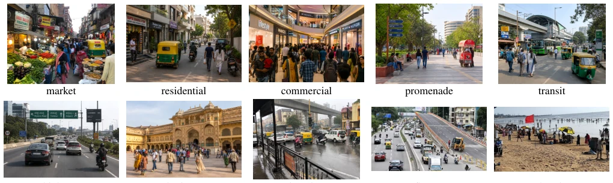
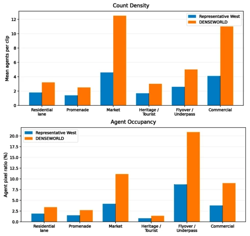
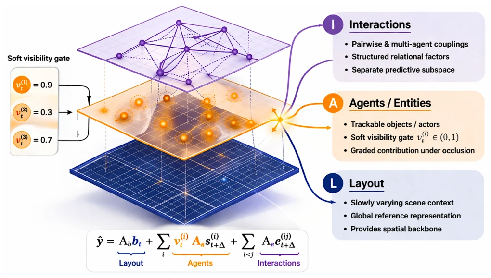
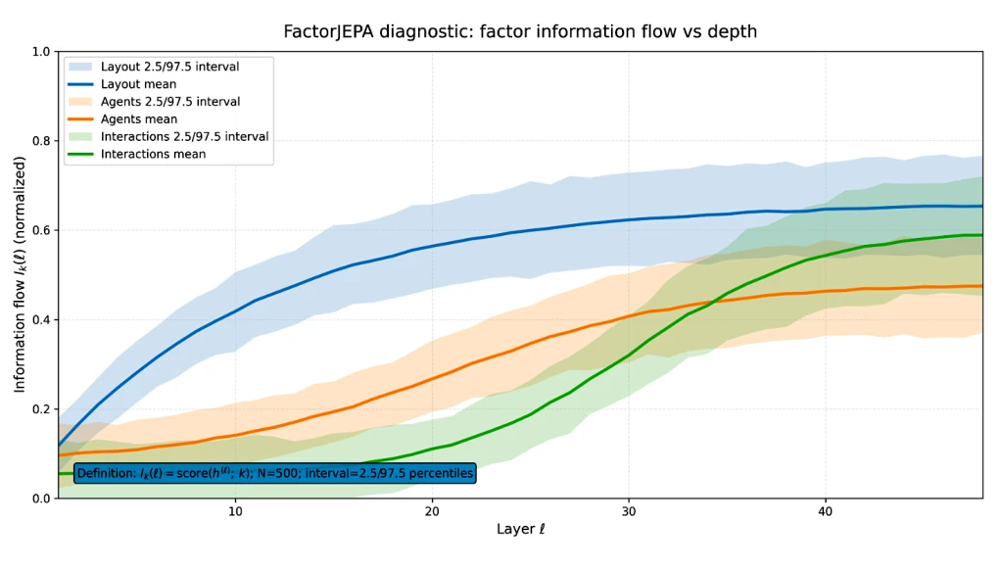
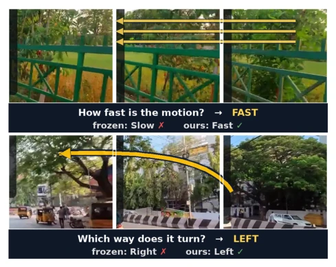
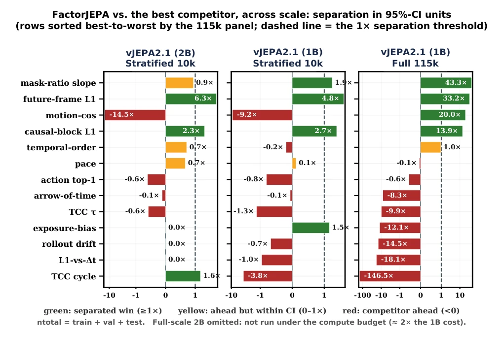
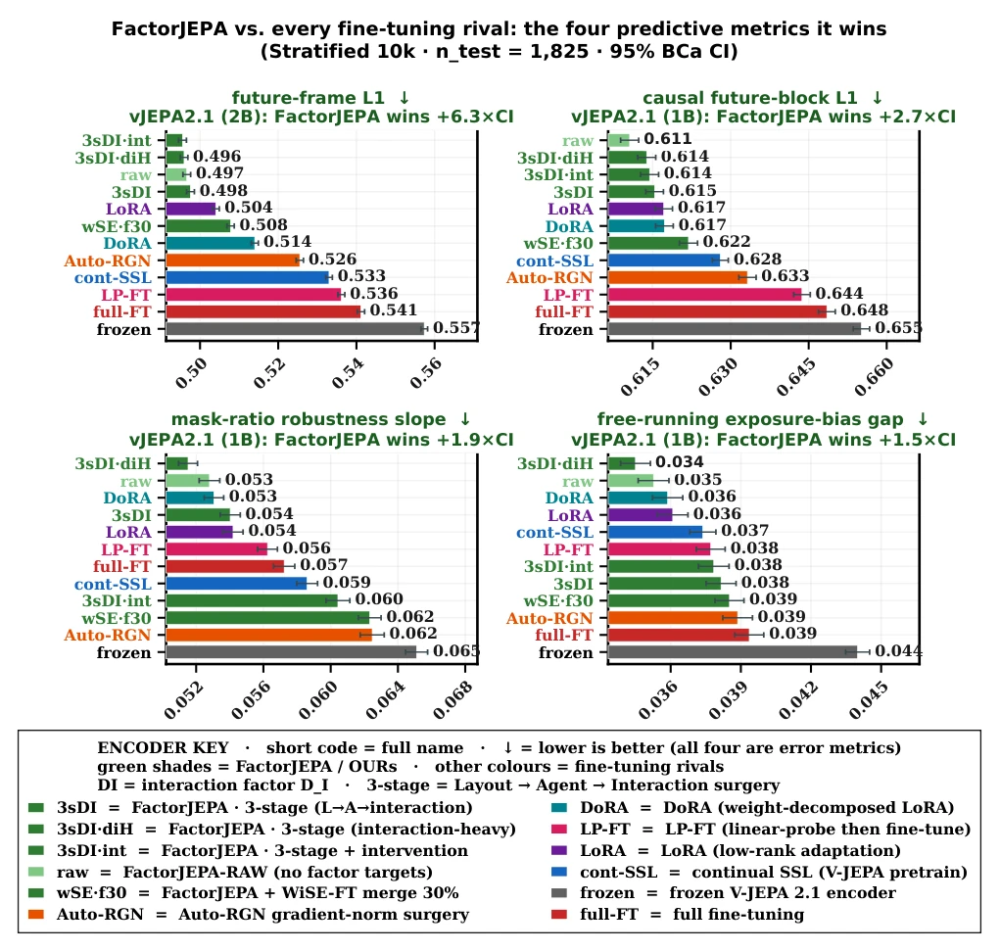
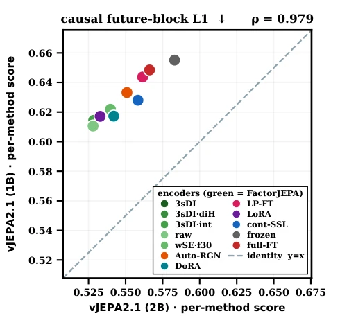
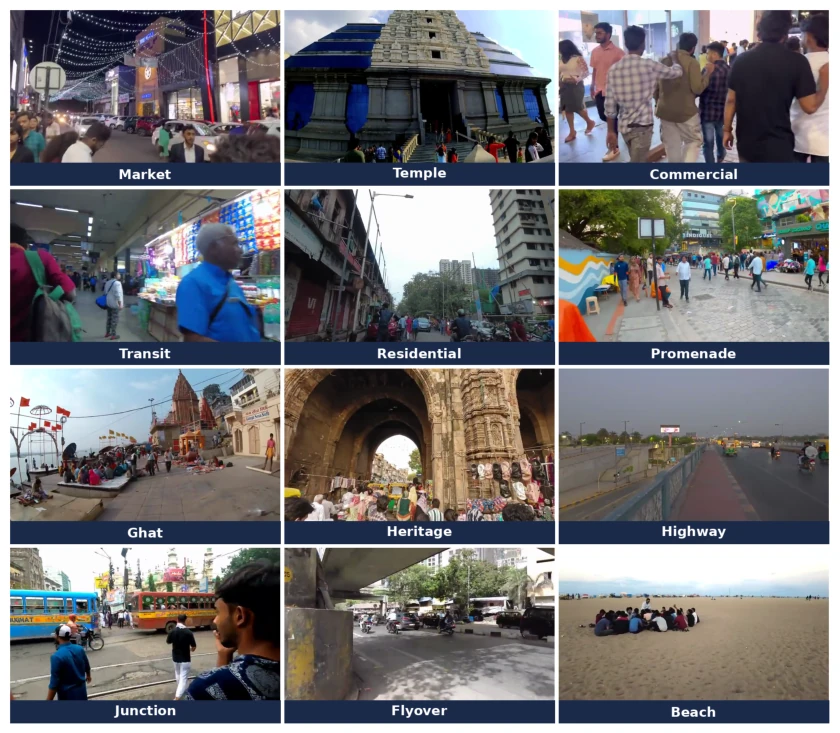
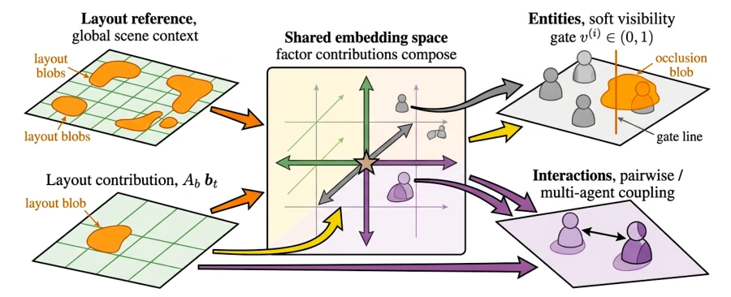

This paper delivers a potent remedy to the crowded and chaotic "Global South" city world models. The authors keenly point out that existing JEPA models work well in scenarios with clear lane lines and orderly traffic, but once encountering the "hellscape" of Indian streets with "soft boundaries, strong occlusion, and mixed traffic," they reveal their true form, with prediction results often becoming a mess. FactorJEPA's idea is clever: instead of compressing the future into a single black-box latent variable, it forcibly decomposes layout, agents, and interactions into three independent channels, using a "gating" mechanism to handle occlusion and orthogonal loss to prevent shortcuts. This approach indeed brings a qualitative leap to the model in predicting future frames and resisting occlusion. However, the authors must also admit that this structured prediction sacrifices the linear interpretability of motion information when data is insufficient, creating an awkward situation where "predictions are accurate but motion features are hard to read." Although they later filled this pit with big data, it still reminds us: structured does not mean omnipotent, data volume is the bottom line. Overall, this is a precise strike against world models "overfitting the ordered world," but there is still a distance from true general embodied intelligence.
研究动机Motivation
现有世界模型（World Models）和联合嵌入预测架构（JEPA）大多在BDD100K (Yu et al. 2020) 或nuScenes (Caesar et al. 2020) 等基准上评估，这些场景通常具有清晰的车道线、低密度和结构化交通。然而，全球南方（Global South）的城市环境（如印度）截然不同：存在“软空间边界”、极端智能体异质性（人、车、三轮车、动物混行）、持续遮挡以及基于社会协商而非规则的混合交通。这种DENSEWORLD环境对现有JEPA构成了严峻挑战，因为单一的全局潜变量容易利用捷径（如用纹理代替交互），无法在部分可观测下保持复杂的动态结构。现有微调方法（如LoRA, DoRA, Auto-RGN）仅调整参数，无法重构预测器的内部结构，导致在密集交互场景下性能崩塌。因此，亟需一种能显式解耦布局、智能体和交互的架构，以应对高密度、高遮挡和强交互的复杂城市动态。
Existing World Models and Joint Embedding Predictive Architectures (JEPA) are mostly evaluated on benchmarks such as BDD100K (Yu et al. 2020) or nuScenes (Caesar et al. 2020), where scenes typically feature clear lane lines, low density, and structured traffic. However, urban environments in the Global South (such as India) are entirely different: they feature "soft spatial boundaries," extreme agent heterogeneity (mixing of humans, vehicles, rickshaws, and animals), continuous occlusion, and mixed traffic based on social negotiation rather than rules. This DENSEWORLD environment poses a severe challenge to existing JEPA, because a single global latent variable tends to exploit shortcuts (e.g., using texture instead of interaction) and cannot maintain complex dynamic structures under partial observability. Existing fine-tuning methods (such as LoRA, DoRA, Auto-RGN) only adjust parameters and cannot reconstruct the internal structure of the predictor, leading to performance collapse in dense interaction scenarios. Therefore, there is an urgent need for an architecture that can explicitly decouple layout, agents, and interactions to cope with complex urban dynamics characterized by high density, high occlusion, and strong interactions.

Figure 2: DENSEWORLD 1.0 scene-type coverage. Representative examples from the dataset illustrate the breadth of urban environments covered by DENSEWORLD 1.0, including market, residential, commercial, promenade, transit, highway, heritage, junction, flyover, and beach scenes. This diversity reflects the spatial, social, and infrastructural heterogeneity of populous, crowded, and chaotic urban environments.

Figure 3: DENSEWORLD exhibits higher multi-agent density than standard driving benchmarks. We compare agent count density and agent occupancy across matched scene types. DENSEWORLD shows large gaps in mar- ket, commercial, and flyover/underpass scenes, indicating stronger interaction pressure and heavier visual competition.
The core idea of FactorJEPA is to transform the JEPA predictor from a "monolithic black box" into "structured channels". The overall process is: first, use the pre-trained V-JEPA encoder to extract contextual features, then replace the original monolithic predictor, introducing three explicit prediction channels: Layout, Visibility-gated Agents, and Sparse Interactions.
Specific innovations are as follows: 1. Structured Decomposition: The predictor no longer directly outputs latent variables for future frames, but instead predicts the coordinates of three factors separately. The layout channel encodes slowly changing spatial supports; the agent channel handles occlusion through a Soft Visibility Gate, attenuating uncertain agents rather than discarding them directly; the interaction channel calculates pairwise sparse coupling relationships. 2. Semantic Anchoring and Separation: Utilize automatically generated targets by DINOv2 (layout masks, agent trajectories, interaction relationships) as supervision signals to train specific prediction heads. Meanwhile, introduce a separation loss (L_sep) to penalize covariance and nonlinear dependencies between different channels, preventing the model from taking "shortcuts" or leaking information between different channels. 3. Predictor Surgery: Keep the pre-trained encoder and momentum target network frozen, only performing a "surgical" replacement on the predictor. Training adopts phased curriculum learning: first warm-up heads, then sequentially unfreeze encoder top blocks related to layout, agents, and interactions, gradually transitioning from spatial structure to complex interaction prediction. 4. Matrix Factorization Reconstruction: The final future embedding is reconstructed through the matrix product of factor coordinates and a synthetic dictionary (Y = C * A^T), ensuring the prediction results remain geometrically complete while each channel maintains functional independence.

Figure 6: Factorized prediction. FactorJEPA composes the target embedding from layout, agents, and interactions, with a soft visibility gate applied only to entity terms.

Figure 7: Depth-wise factor realization. Lightweight probes show a staged profile: layout emerges early, agents grow gradually, and interactions peak in deeper layers.
结果显示，在1B和2B参数规模下，FactorJEPA在Future-frame L1和Causal L1上显著优于所有基线（分离度达6.3倍置信区间）。在115k全量数据训练下，FactorJEPA在所有四项指标上均实现统计显著分离，特别是Mask-ratio斜率提升了43.3倍。然而，在数据受限（10k clips）时，FactorJEPA在Motion cosine上略逊于全量微调，揭示了“结构化预测”与“线性运动可解性”之间的权衡，但全量训练后该劣势被逆转。跨尺度实验（1B vs 2B）显示方法排序高度一致（ρ > 0.89），验证了方法的鲁棒性。
The study constructed the DENSEWORLD-115k dataset, containing 1000 hours of video from 22 Indian cities, covering 12 scenarios such as markets, commercial districts, and overpasses, featuring high density and strong heterogeneity. Experiments compared fine-tuning methods such as frozen encoder, LoRA, DoRA, Auto-RGN with FactorJEPA. Evaluation metrics include Future-frame L1 (prediction accuracy), Causal L1 (intervention sensitivity), Mask-ratio slope (occlusion robustness), and Motion cosine (linear readability of motion information).
Results show that under 1B and 2B parameter scales, FactorJEPA is significantly superior to all baselines on Future-frame L1 and Causal L1 (separation reaches 6.3 times confidence interval). Under 115k full data training, FactorJEPA achieved statistical significant separation on all four metrics, especially the Mask-ratio slope improved by 43.3 times. However, when data is limited (10k clips), FactorJEPA is slightly inferior to full fine-tuning on Motion cosine, revealing the trade-off between "structured prediction" and "linear motion solvability," but this disadvantage is reversed after full training. Cross-scale experiments (1B vs 2B) show highly consistent method ranking (ρ > 0.89), verifying the robustness of the method.

Figure 1: Same question, two encoders. Each row is a three- frame filmstrip of one held-out clip posed as a multiple- choice question, answered from an identical probe head over the frozen V-JEPA 2.1 encoder vs. ours (factor-view predictor surgery); only the backbone differs. Top: motion speed (ours 69.8% vs frozen 60.9%). Bottom: turn direction.

Figure 8: FactorJEPA vs. the strongest competitor across scale and data regimes. Bars report FactorJEPA’s advantage in units of the paired-difference 95% confidence interval; the dashed line marks statistical separation at 1×. Under matched stratified 10k protocol, FactorJEPA separates on Future-frame L1 and Causal L1 at both scales, and on Mask-ratio slope at 1B, while trailing on Motion cosine (revealing a consistent prediction–motion trade-off). With full 115k-clip training at 1B, it separates strongly on all four primary diagnostics, reaching 43.3× for Mask-ratio slope, 33.2× for Future-frame L1, 20.0× for Motion cosine, and 13.9× for Causal L1.

Figure 9: Evaluation scorecard across 2B and 1B scales. Frozen, conventionally adapted, parameter-efficient, and factorized V-JEPA 2.1 variants are compared across predictive, motion, semantic, and temporal diagnostics. Bars report performance with 95% BCa intervals where available.

Figure 10: Causal future-block rankings replicate across model scales. Each point represents one adaptation method, comparing its causal future-block L1 score with the ViT-G 2B backbone on the horizontal axis and the ViT-g 1B back- bone on the vertical axis; lower values are better. FactorJEPA variants are shown in green, and the dashed line denotes equal scores across scales. The strong Spearman correlation (ρ = 0.979) shows that the relative method ordering is highly preserved when scaling from 2B to 1B.
其他图片Other Figures

Figure 4: DENSEWORLD 1.0 scene-type coverage. Twelve representative scene types (market, temple, commercial, transit, residential, promenade, ghat, heritage, highway, junction, flyover, beach) across 22 Indian cities, shown from ground-level pedestrian viewpoints.

Figure 12: Factorized predictive channels. Context is split into layout, visibility-gated agent, and sparse interaction coordinates, then recomposed in the future JEPA embedding, limiting cross-factor leakage.